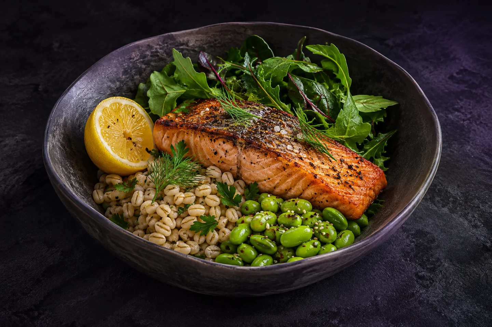
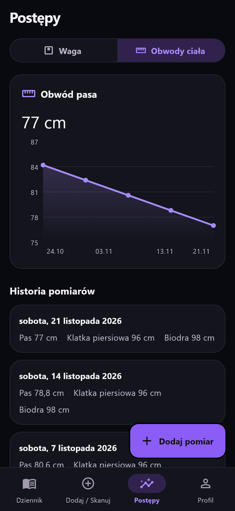
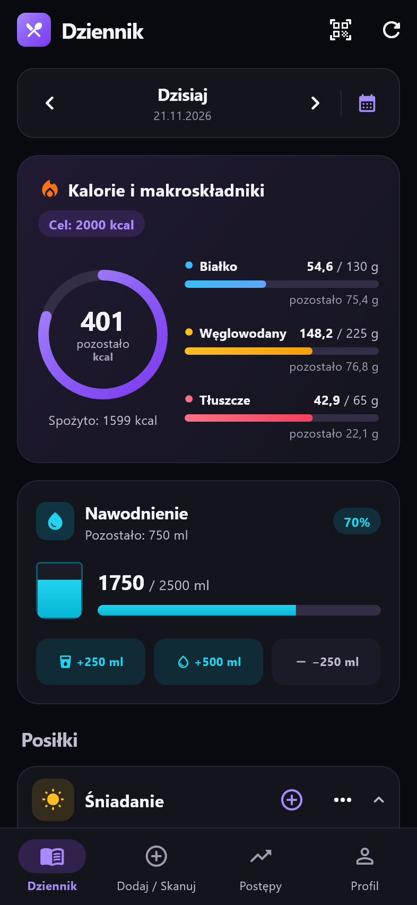

Ulubione i przepisy
Dodaj ulubione produkty i zapisz własny przepis ze składnikami. Później dodasz całą porcję lub jej część.
Dziennik kalorii i posiłków
Zapisuj posiłki, licz makroskładniki i śledź postępy we własnym tempie.


Planuj porcje, prowadź dziennik i wracaj do swoich pomiarów.

Dodaj ulubione produkty i zapisz własny przepis ze składnikami. Później dodasz całą porcję lub jej część.
Porównuj spożycie kalorii i makroskładników z dziennym celem. Zapisuj wodę i przeglądaj poprzednie dni.
Notuj wagę oraz obwody pasa, klatki piersiowej, ramienia, bioder i uda. Wagę i obwód pasa prześledzisz na wykresach.
W Dzienniku widzisz spożyte kalorie, makroskładniki i ilość wypitej wody, gdy zapisujesz kolejne posiłki.
W Postępach przełączaj między wagą a obwodami ciała i porównuj pomiary zapisane w różnych dniach.
Podaj dane i wybierz cel. Grubasek wyliczy cele kalorii i makroskładników na każdy dzień.
Wyszukaj produkt lub zeskanuj kod kreskowy. Wybierz posiłek i podaj gramaturę.
Otwórz Dziennik i porównaj zapisane posiłki ze swoimi dziennymi celami.
Do korzystania z aplikacji wystarczy profil zapisany na urządzeniu. Dziennik i pomiary również zapisują się lokalnie.
Utwórz własny produkt i zapisz jego wartości odżywcze. Jeśli znasz tylko liczbę kalorii posiłku, skorzystaj z funkcji „Szybki wpis”. Makroskładniki są tam opcjonalne.
W zakładce „Profil” możesz wyeksportować Dziennik do pliku CSV. Plik zawiera m.in. datę, nazwę posiłku, produkt, kalorie i makroskładniki.
Na Androidzie pobierz plik APK. Na iPhonie otwórz darmową wersję webową w Safari i dodaj ją do ekranu głównego. Oba przyciski znajdziesz w sekcji pobierania.